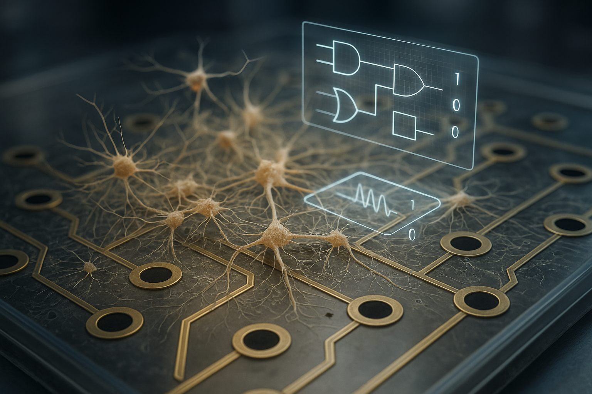
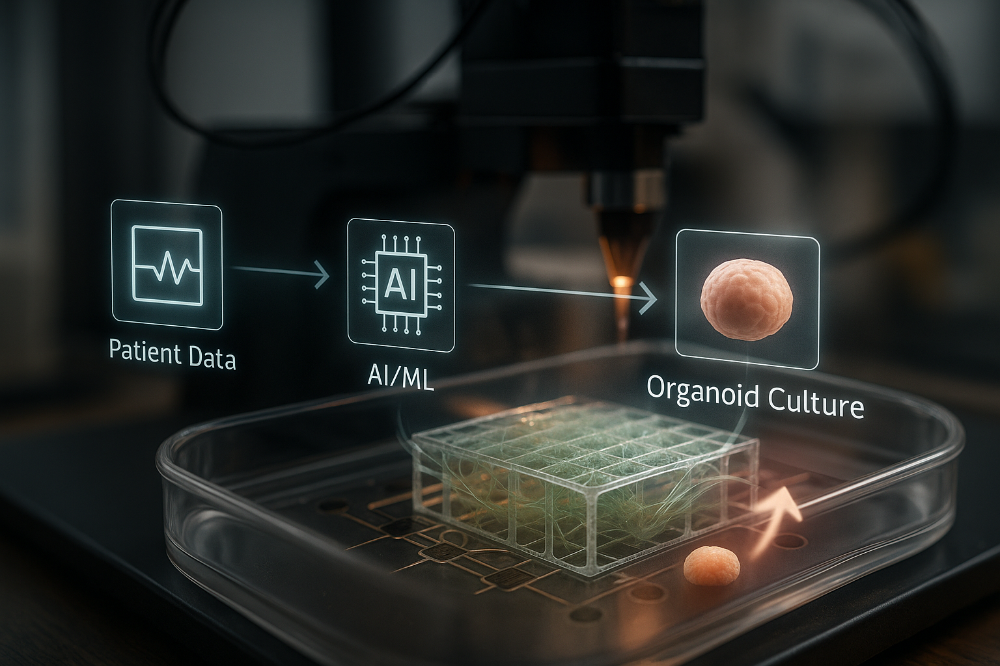
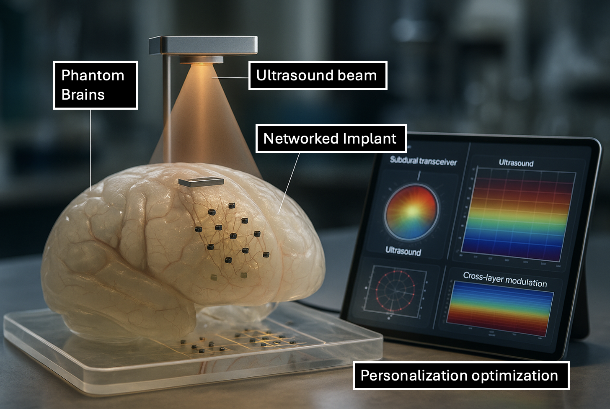

I develop biohybrid systems that combine living cells with technology to create new ways of sensing,
computing, and healing.
My research brings together bioprinting, neuroengineering, and synthetic biology to build experimental
models of brain-like tissue
that can process information, adapt to changes, and support therapeutic functions.
Using tools like AI-driven simulations, 3-D bioprinting, and high-density multi-electrode arrays, my team
explores how
biological systems make decisions and how we can guide them. Our goal is to create living systems that can
support drug delivery,
tissue repair, and new forms of bio-electronic communication—always with a strong focus on safety, ethics,
and real-world impact.

We engineer living neural substrats to perform logic operations and decision-making tasks. Our bio-computation platforms implement Boolean logic, classification, and memory functions through both genetic and electrophysiological mechanisms. Using AI-guided modelling and multi-electrode interfacing, we validate these circuits in real-time and adapt them for applications in closed-loop therapeutics, diagnostics, and biologically inspired machine intelligence.

Our work in 4D bioprinting creates smart, adaptive scaffolds that not only support neural tissue growth but also integrate sensing, computation, and actuation capabilities. By leveraging stimuli-responsive materials and high-resolution printing, we design living constructs that evolve over time, vascularise, and modulate therapeutic release. We aim for long-term functionality, biocompatibility, and seamless integration with both biological systems and external devices.

To connect living systems with machines, we build wireless, battery-less interfaces that operate through multiphysical communication. These interfaces power and interrogate embedded biomaterials, cells or tissue constructs non-invasively, enabling real-time feedback and multi-channel neural modulation. This is our vision for scalable, implantable systems and bio-electronic networks rooted in the AI-driven wireless communication paradigm.
AI-driven Digital Twins of living constructs for modeling and predictive analytics.
Used in
MSCA-IF
STOICISM
and our
IEEE T-MBMC paper on multiscale digital twins for pharmacology.
Customised, stimuli-responsive bio‑inks for dynamic, evolving tissue architectures.
Developed in
UKRI
BBSRC IAA
and
Innovate UK KTP
with iMakr.
Microcircuit spatiotemporal resolution for precise neuroelectronic interfacing.
Implemented using
Axion
MEA
systems
and explored in our
Royal Society Open Science
paper
on neuron–astrocyte network desynchronization.
multiphysical links to power and interrogate biohybrids in real time.
Advanced through the
EU FET-Open
GLADIATOR project
and our
IEEE TMBMC
paper on ultrasonic implants.
| Role | Funding Details | Years |
|---|---|---|
| PI | UKRI BBSRC IAA Engagement Award – Optimisation of exosome-based therapies from 3D BioPrinted stem cell structures | 2023-2024 |
| Co-I | UKRI BBSRC Pioneers Award – ROS signaling in plants: Are we missing a fundamental pathway? | 2024-2026 |
| PI | InnovateUK Knowledge Transfer Partnership, 3D Bioprinting technology for new market solutions in the UK. Participants: University of Essex and iMakr Group | 2022-2024 |
| PI | Marie Skłodowska-Curie Individual Fellowship (EU-H2020-MSCA-IF), STOICISM - Stochastic Communication Inside Cortical Microcolumns | 2019-2022 |
| PI | WIT President PhD Funding, Internet of Nano Things for the Next Generation Theranostics of Brain Glioblastomas | 2019-2023 |
| Co-I | EU-H2020-FET. GLADIATOR: Next-generation theranostics of brain pathologies with autonomous externally controllable nanonetworks | 2018-2022 |
| PI | Enterprise Ireland Commercialisation Fund, CDaaS – Clinical Data as a Service | 2018-2019 |
| PI | Irish Research Council, Government of Ireland Postdoc Fellowship, Application of Control Theory in Molecular Communication for the Treatment of Alzheimer’s Disease | 2016-2018 |
Students: PhD projects in living computation and regenerative biohybrids – apply now.
Collaborators: We welcome partnerships with clinicians, device engineers, and ethicists. Let’s build the future of biohybrid systems together – contact us.
Open Science: Explore our code, datasets, and tools on GitHub.